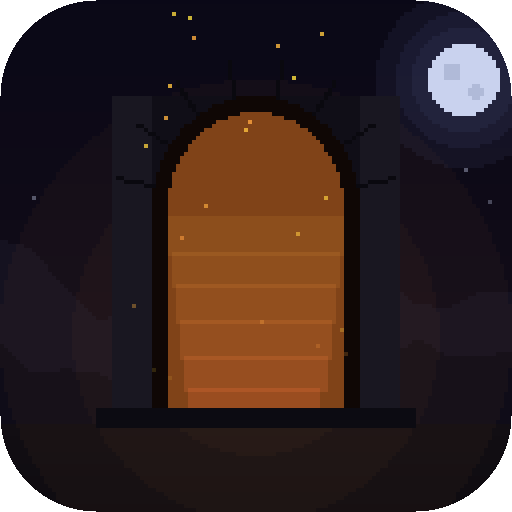
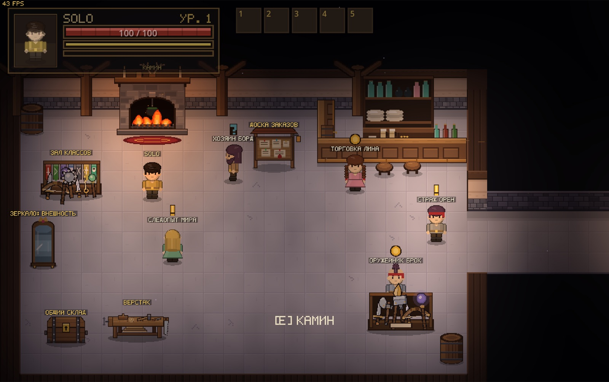
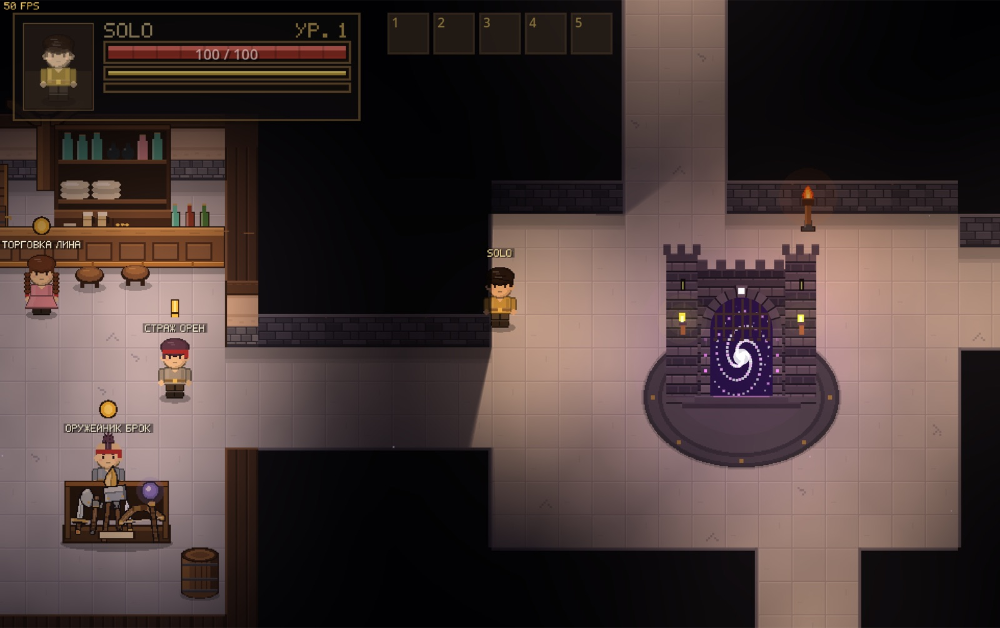
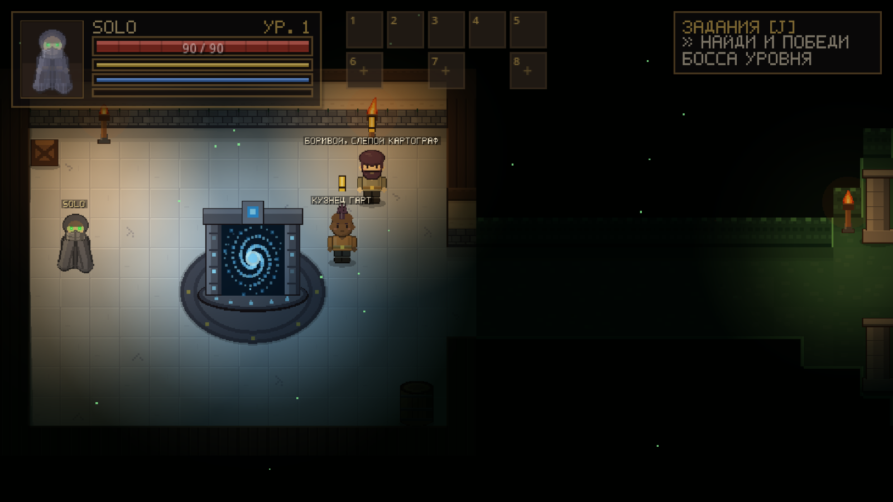
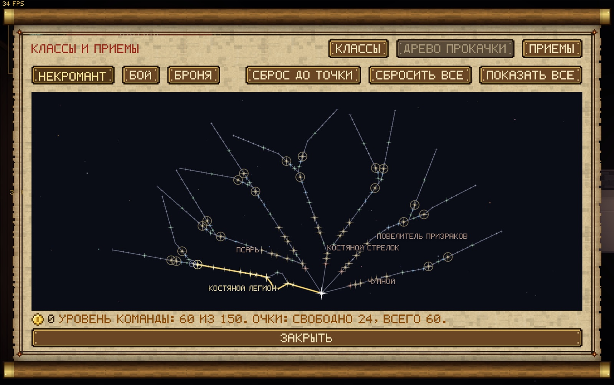
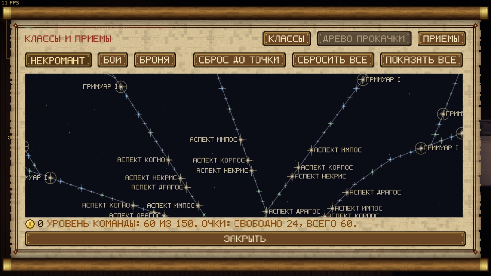
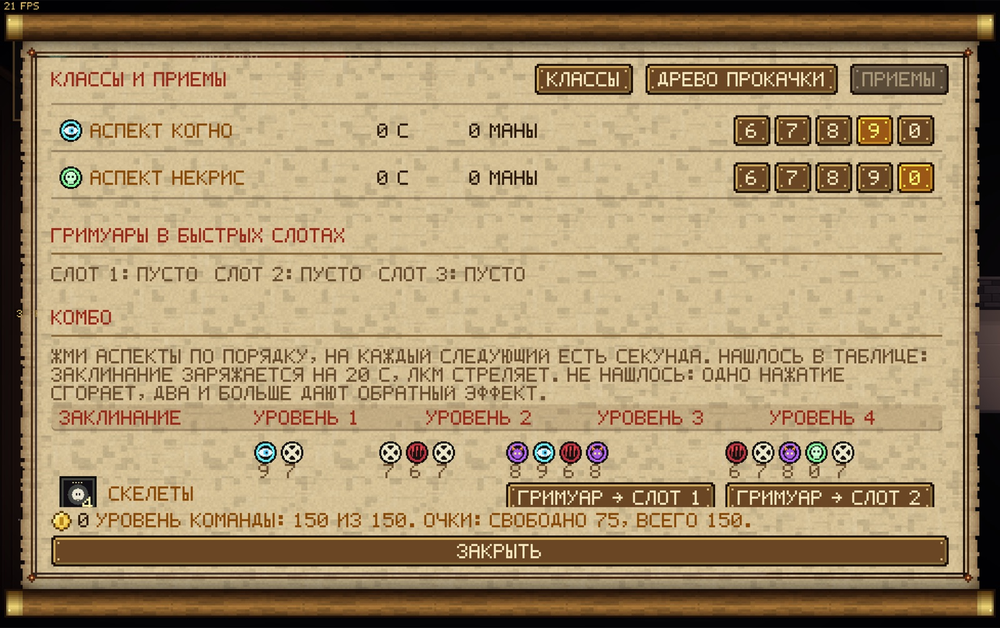
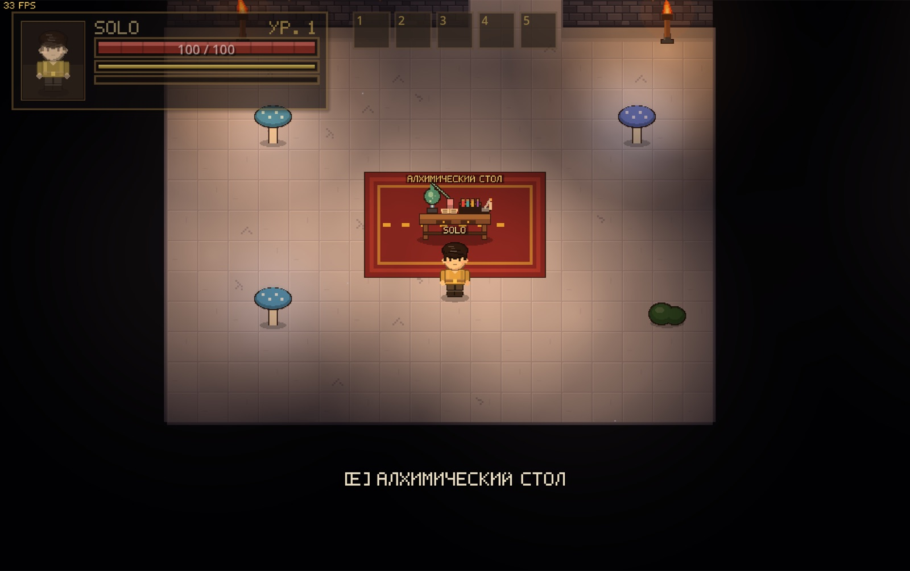
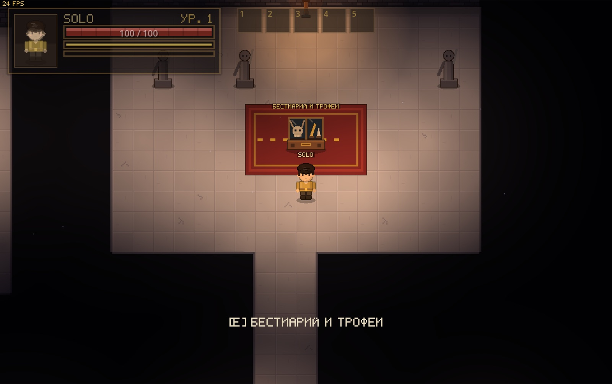
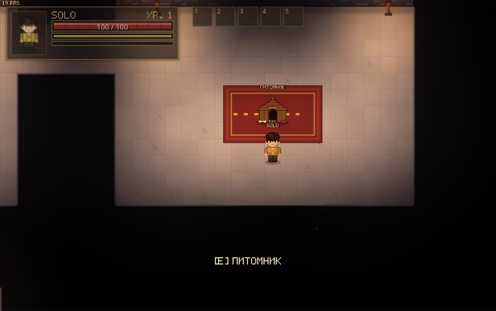

Пиксельная action-RPG о страннике, который просто хотел передохнуть, а нашёл в таверне портал в подземелья. Один или с друзьями, до четырёх игроков.
Версия 1.2.0 · все релизы
Ты еле стоишь на ногах, когда добредаешь до таверны «Усталый путник». Хозяин Борд суёт тебе зелья и подарок на дорогу и между делом говорит, что внизу, под полом, кишат твари. А посреди зала у него стоит портал, и ведёт он куда глубже подвала.



Дорога вниз идёт через катакомбы и склепы, тёмные чащи, огненные пещеры и ледяные залы. Между вылазками ты возвращаешься в таверну, и она меняется вместе с тобой: люди, которых ты вытащил из подземелий, остаются здесь и помогают.
Цепочки ударов, блок и парирование щитом, увороты, стрельба. Каждый враг бьёт по-своему, у каждого стража свой характер.
Десять классов, у каждого от трёх до пяти подклассов и своё звёздное дерево. На каждой развилке выбираешь одну сторону, остальные закрываются до сброса.
Оружие, броня, щиты, кольца и амулеты. Улучшай, чини и усиливай любимый клинок.
Запертые арены, засады, головоломки, ловушки и тайники для тех, кто смотрит внимательно.
Встречи, задания и странные события, где исход решает бросок кубика.
Кузня, алхимия, верстак, библиотека, трофеи, питомник и склад. Спасённые в подземельях остаются здесь и помогают.
Путь выбирается в таверне. Первый даётся даром, остальные придётся заслужить.
Большое обновление: новое дерево умений, подклассы, перестроенная таверна и плавный кооператив.



150 очков: 30 на броню, 45 на бой, 75 на класс. У каждого подкласса своя форма ветки: ранний раскол, ромб, вилка в конце. Подписи лежат прямо на карте и меняются с зумом.
Аспекты открываются в первой четверти пути, гримуары к середине, комбо из шести нажатий к трём четвертям. У некроманта новое заклинание: похоронная повозка с костяной упряжкой.
Травник, Зверолов, Хранитель рощи и Буревестник. Медвежья форма с лапами, колючки, рой пчёл, гроза.
Перерисованы камин, стойка, верстак, наковальня, алхимический стол, витрина трофеев, будка и сундуки. Все порталы теперь каменные врата с вихрем внутри.
Перед первым походом Борд выкладывает на стол всё стартовое оружие: наведи, чтобы увидеть урон, бафы и кому оно подходит.
Союзники и их имена двигаются так же плавно, как твой герой. Двадцать сюжетных сцен с последствиями, которые помнят твой выбор.



Кооператив на 2-4 игрока по сети. Квесты и опыт общие на команду, упавшего союзника можно поднять.
7777 UDP, или зайдите все в одну виртуальную сеть: Tailscale, Radmin VPN, ZeroTier.| Движение | WASD |
| Атака / тяжёлый удар | ЛКМ |
| Блок, выстрел | ПКМ |
| Уворот | ПРОБЕЛ |
| Приёмы класса | 6…0 |
| Действие | E |
| Инвентарь / журнал / карта / умения | IJMK |
| Полный экран | F11 |
Скачай, установи, играй. Сборки не подписаны платными сертификатами, поэтому при первом запуске система может переспросить.
TiredWanderer.exe и просто запусти: игра в одном файле, установка не нужна.TiredWanderer-macos.dmg и перетащи TiredWanderer в «Программы».xattr -cr /Applications/TiredWanderer.appTiredWanderer-android.apk на телефон и открой.TiredWanderer-linux.zip.chmod +x TiredWanderer.x86_64